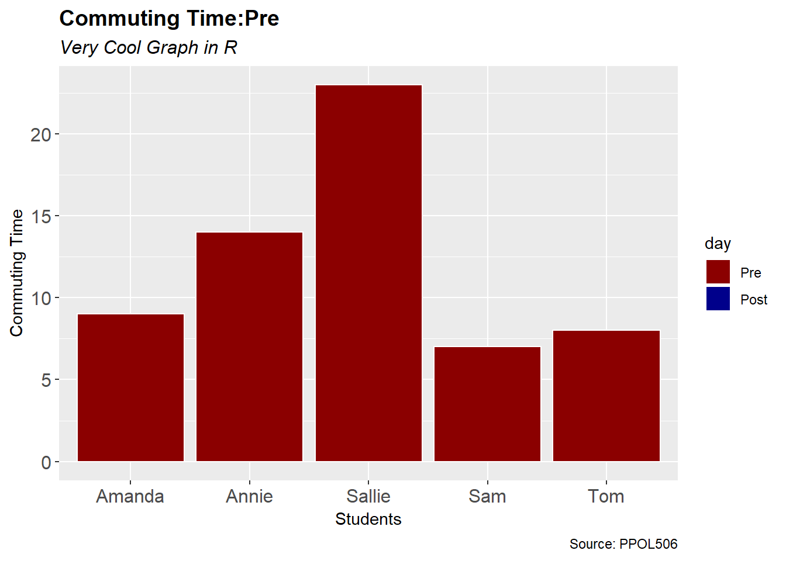
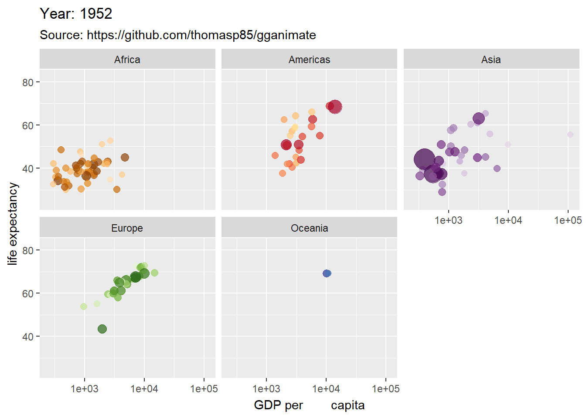

Graphs
, @allison_horst](FIGURE/ggplot2.png)
Designed by Allison Horst, @allison_horst
There are several packages that can be used in R to create graphs. The most famous one is called ggplot2.
All R packages are freely available online. You just need to install them in your R workspace. Once installed, all your packages are saved in a “library” from where you can retrieve them when needed.
install.packages("ggplot2", repos="https://cran.cnr.berkeley.edu")
library("ggplot2")As a first example we can imagine that the city is creating a new bus stop for students at a local university, which is supposed to shorten commuting time for students.
We sample 5 students and collect information about their commuting time before and after the new bus stop and we store them in a dataframe.
students <- c("Annie", "Sam", "Sallie", "Tom", "Amanda", "Annie", "Sam", "Sallie", "Tom", "Amanda")
commuting_time <- c(14, 7, 23, 8, 9, 10, 5, 18, 5, 4)
day <- c(rep("Pre", 5), rep("Post", 5))
data <- as.data.frame(cbind(students, commuting_time, day))
data## students commuting_time day
## 1 Annie 14 Pre
## 2 Sam 7 Pre
## 3 Sallie 23 Pre
## 4 Tom 8 Pre
## 5 Amanda 9 Pre
## 6 Annie 10 Post
## 7 Sam 5 Post
## 8 Sallie 18 Post
## 9 Tom 5 Post
## 10 Amanda 4 PostNow we can use ggplot to create an interactive graph that shows how the commuting time has decreased after the bus stop has been implemented.
ggplot(data, aes(y=commuting_time, x=students, fill=day)) +
geom_bar(position="dodge", stat="identity", color="white") +
labs(x = "Students",
y = "Commuting Time",
title = 'Commuting Time:{closest_state} ',
subtitle = "Very Cool Graph in R",
caption = "Source: PPOL506") +
scale_fill_manual(values = c("darkred", "darkblue")) +
theme(plot.title = element_text(face = "bold", size = 14),
plot.subtitle = element_text(face = "italic", size = 12),
axis.text = element_text(size=12)) +
transition_states(day, transition_length = 16, state_length = 16) +
exit_shrink() +
enter_grow() +
ease_aes('sine-in-out')##
Rendering [---------------------------------------] at 4.5 fps ~ eta: 22s
Rendering [>--------------------------------------] at 4.1 fps ~ eta: 24s
Rendering [>----------------------------------------] at 4 fps ~ eta: 24s
Rendering [=>---------------------------------------] at 4 fps ~ eta: 24s
Rendering [=>---------------------------------------] at 4 fps ~ eta: 23s
Rendering [=>-------------------------------------] at 4.1 fps ~ eta: 23s
Rendering [==>------------------------------------] at 4.2 fps ~ eta: 22s
Rendering [==>------------------------------------] at 4.3 fps ~ eta: 21s
Rendering [===>-----------------------------------] at 4.3 fps ~ eta: 21s
Rendering [===>-----------------------------------] at 4.4 fps ~ eta: 20s
Rendering [====>----------------------------------] at 4.4 fps ~ eta: 20s
Rendering [====>----------------------------------] at 4.5 fps ~ eta: 19s
Rendering [=====>---------------------------------] at 4.5 fps ~ eta: 19s
Rendering [======>--------------------------------] at 4.5 fps ~ eta: 18s
Rendering [=======>-------------------------------] at 4.5 fps ~ eta: 18s
Rendering [=======>-------------------------------] at 4.6 fps ~ eta: 17s
Rendering [========>------------------------------] at 4.6 fps ~ eta: 17s
Rendering [========>------------------------------] at 4.6 fps ~ eta: 16s
Rendering [=========>-----------------------------] at 4.6 fps ~ eta: 16s
Rendering [=========>-----------------------------] at 4.7 fps ~ eta: 16s
Rendering [==========>----------------------------] at 4.7 fps ~ eta: 16s
Rendering [==========>----------------------------] at 4.7 fps ~ eta: 15s
Rendering [===========>---------------------------] at 4.8 fps ~ eta: 15s
Rendering [===========>---------------------------] at 4.8 fps ~ eta: 14s
Rendering [============>--------------------------] at 4.8 fps ~ eta: 14s
Rendering [=============>-------------------------] at 4.8 fps ~ eta: 14s
Rendering [=============>-------------------------] at 4.8 fps ~ eta: 13s
Rendering [==============>------------------------] at 4.9 fps ~ eta: 13s
Rendering [===============>-----------------------] at 4.9 fps ~ eta: 12s
Rendering [================>----------------------] at 4.9 fps ~ eta: 12s
Rendering [================>----------------------] at 4.9 fps ~ eta: 11s
Rendering [=================>---------------------] at 4.9 fps ~ eta: 11s
Rendering [=================>---------------------] at 4.8 fps ~ eta: 11s
Rendering [==================>--------------------] at 4.8 fps ~ eta: 11s
Rendering [===================>-------------------] at 4.8 fps ~ eta: 10s
Rendering [====================>------------------] at 4.8 fps ~ eta: 10s
Rendering [====================>------------------] at 4.7 fps ~ eta: 10s
Rendering [=====================>-----------------] at 4.7 fps ~ eta: 9s
Rendering [======================>----------------] at 4.7 fps ~ eta: 9s
Rendering [======================>----------------] at 4.7 fps ~ eta: 8s
Rendering [=======================>---------------] at 4.7 fps ~ eta: 8s
Rendering [========================>--------------] at 4.7 fps ~ eta: 8s
Rendering [========================>--------------] at 4.8 fps ~ eta: 8s
Rendering [========================>--------------] at 4.8 fps ~ eta: 7s
Rendering [=========================>-------------] at 4.8 fps ~ eta: 7s
Rendering [==========================>------------] at 4.8 fps ~ eta: 7s
Rendering [==========================>------------] at 4.8 fps ~ eta: 6s
Rendering [===========================>-----------] at 4.7 fps ~ eta: 6s
Rendering [============================>----------] at 4.7 fps ~ eta: 6s
Rendering [============================>----------] at 4.7 fps ~ eta: 5s
Rendering [=============================>---------] at 4.7 fps ~ eta: 5s
Rendering [==============================>--------] at 4.7 fps ~ eta: 5s
Rendering [==============================>--------] at 4.7 fps ~ eta: 4s
Rendering [===============================>-------] at 4.7 fps ~ eta: 4s
Rendering [===============================>-------] at 4.6 fps ~ eta: 4s
Rendering [================================>------] at 4.6 fps ~ eta: 3s
Rendering [=================================>-----] at 4.7 fps ~ eta: 3s
Rendering [==================================>----] at 4.7 fps ~ eta: 2s
Rendering [===================================>---] at 4.7 fps ~ eta: 2s
Rendering [====================================>--] at 4.6 fps ~ eta: 1s
Rendering [====================================>--] at 4.7 fps ~ eta: 1s
Rendering [=====================================>-] at 4.7 fps ~ eta: 1s
Rendering [=====================================>-] at 4.7 fps ~ eta: 0s
Rendering [======================================>] at 4.7 fps ~ eta: 0s
Rendering [=======================================] at 4.7 fps ~ eta: 0s
##
Frame 1 (1%)
Frame 2 (2%)
Frame 3 (3%)
Frame 4 (4%)
Frame 5 (5%)
Frame 6 (6%)
Frame 7 (7%)
Frame 8 (8%)
Frame 9 (9%)
Frame 10 (10%)
Frame 11 (11%)
Frame 12 (12%)
Frame 13 (13%)
Frame 14 (14%)
Frame 15 (15%)
Frame 16 (16%)
Frame 17 (17%)
Frame 18 (18%)
Frame 19 (19%)
Frame 20 (20%)
Frame 21 (21%)
Frame 22 (22%)
Frame 23 (23%)
Frame 24 (24%)
Frame 25 (25%)
Frame 26 (26%)
Frame 27 (27%)
Frame 28 (28%)
Frame 29 (29%)
Frame 30 (30%)
Frame 31 (31%)
Frame 32 (32%)
Frame 33 (33%)
Frame 34 (34%)
Frame 35 (35%)
Frame 36 (36%)
Frame 37 (37%)
Frame 38 (38%)
Frame 39 (39%)
Frame 40 (40%)
Frame 41 (41%)
Frame 42 (42%)
Frame 43 (43%)
Frame 44 (44%)
Frame 45 (45%)
Frame 46 (46%)
Frame 47 (47%)
Frame 48 (48%)
Frame 49 (49%)
Frame 50 (50%)
Frame 51 (51%)
Frame 52 (52%)
Frame 53 (53%)
Frame 54 (54%)
Frame 55 (55%)
Frame 56 (56%)
Frame 57 (57%)
Frame 58 (58%)
Frame 59 (59%)
Frame 60 (60%)
Frame 61 (61%)
Frame 62 (62%)
Frame 63 (63%)
Frame 64 (64%)
Frame 65 (65%)
Frame 66 (66%)
Frame 67 (67%)
Frame 68 (68%)
Frame 69 (69%)
Frame 70 (70%)
Frame 71 (71%)
Frame 72 (72%)
Frame 73 (73%)
Frame 74 (74%)
Frame 75 (75%)
Frame 76 (76%)
Frame 77 (77%)
Frame 78 (78%)
Frame 79 (79%)
Frame 80 (80%)
Frame 81 (81%)
Frame 82 (82%)
Frame 83 (83%)
Frame 84 (84%)
Frame 85 (85%)
Frame 86 (86%)
Frame 87 (87%)
Frame 88 (88%)
Frame 89 (89%)
Frame 90 (90%)
Frame 91 (91%)
Frame 92 (92%)
Frame 93 (93%)
Frame 94 (94%)
Frame 95 (95%)
Frame 96 (96%)
Frame 97 (97%)
Frame 98 (98%)
Frame 99 (99%)
Frame 100 (100%)
## Finalizing encoding... done!
ggplot(gapminder, aes(gdpPercap, lifeExp, size = pop, colour = country)) +
geom_point(alpha = 0.7, show.legend = FALSE) +
scale_colour_manual(values = country_colors) +
scale_size(range = c(2, 12)) +
scale_x_log10() +
facet_wrap(~continent) +
# Here comes the gganimate specific bits
labs(title = 'Year: {frame_time}', subtitle = 'Source: https://github.com/thomasp85/gganimate', x = 'GDP per capita', y = 'life expectancy') +
transition_time(year) +
ease_aes('linear')##
Rendering [---------------------------------------] at 3.2 fps ~ eta: 31s
Rendering [>--------------------------------------] at 3.1 fps ~ eta: 32s
Rendering [>----------------------------------------] at 3 fps ~ eta: 32s
Rendering [=>-------------------------------------] at 2.9 fps ~ eta: 33s
Rendering [=>-------------------------------------] at 2.9 fps ~ eta: 32s
Rendering [=>-------------------------------------] at 2.9 fps ~ eta: 33s
Rendering [==>------------------------------------] at 2.8 fps ~ eta: 33s
Rendering [==>------------------------------------] at 2.8 fps ~ eta: 32s
Rendering [===>-----------------------------------] at 2.8 fps ~ eta: 32s
Rendering [====>----------------------------------] at 2.8 fps ~ eta: 32s
Rendering [====>----------------------------------] at 2.7 fps ~ eta: 32s
Rendering [====>----------------------------------] at 2.8 fps ~ eta: 31s
Rendering [=====>---------------------------------] at 2.8 fps ~ eta: 31s
Rendering [=====>---------------------------------] at 2.8 fps ~ eta: 30s
Rendering [======>--------------------------------] at 2.8 fps ~ eta: 29s
Rendering [======>--------------------------------] at 2.9 fps ~ eta: 28s
Rendering [=======>-------------------------------] at 2.9 fps ~ eta: 28s
Rendering [========>------------------------------] at 2.9 fps ~ eta: 27s
Rendering [========>------------------------------] at 2.8 fps ~ eta: 27s
Rendering [=========>-----------------------------] at 2.8 fps ~ eta: 27s
Rendering [==========>----------------------------] at 2.7 fps ~ eta: 27s
Rendering [==========>----------------------------] at 2.7 fps ~ eta: 26s
Rendering [===========>---------------------------] at 2.7 fps ~ eta: 26s
Rendering [===========>---------------------------] at 2.7 fps ~ eta: 25s
Rendering [============>--------------------------] at 2.7 fps ~ eta: 24s
Rendering [=============>-------------------------] at 2.7 fps ~ eta: 24s
Rendering [=============>-------------------------] at 2.7 fps ~ eta: 23s
Rendering [==============>------------------------] at 2.7 fps ~ eta: 23s
Rendering [===============>-----------------------] at 2.7 fps ~ eta: 22s
Rendering [================>----------------------] at 2.7 fps ~ eta: 21s
Rendering [=================>---------------------] at 2.7 fps ~ eta: 20s
Rendering [==================>--------------------] at 2.7 fps ~ eta: 19s
Rendering [===================>-------------------] at 2.7 fps ~ eta: 19s
Rendering [===================>-------------------] at 2.7 fps ~ eta: 18s
Rendering [====================>------------------] at 2.7 fps ~ eta: 17s
Rendering [=====================>-----------------] at 2.7 fps ~ eta: 16s
Rendering [======================>----------------] at 2.7 fps ~ eta: 15s
Rendering [======================>----------------] at 2.8 fps ~ eta: 15s
Rendering [=======================>---------------] at 2.8 fps ~ eta: 14s
Rendering [========================>--------------] at 2.8 fps ~ eta: 13s
Rendering [========================>--------------] at 2.7 fps ~ eta: 13s
Rendering [=========================>-------------] at 2.7 fps ~ eta: 12s
Rendering [==========================>------------] at 2.8 fps ~ eta: 12s
Rendering [==========================>------------] at 2.8 fps ~ eta: 11s
Rendering [==========================>------------] at 2.7 fps ~ eta: 11s
Rendering [===========================>-----------] at 2.7 fps ~ eta: 11s
Rendering [===========================>-----------] at 2.7 fps ~ eta: 10s
Rendering [============================>----------] at 2.7 fps ~ eta: 10s
Rendering [============================>----------] at 2.7 fps ~ eta: 9s
Rendering [=============================>---------] at 2.7 fps ~ eta: 9s
Rendering [=============================>---------] at 2.7 fps ~ eta: 8s
Rendering [==============================>--------] at 2.7 fps ~ eta: 8s
Rendering [==============================>--------] at 2.7 fps ~ eta: 7s
Rendering [===============================>-------] at 2.7 fps ~ eta: 7s
Rendering [===============================>-------] at 2.7 fps ~ eta: 6s
Rendering [================================>------] at 2.7 fps ~ eta: 6s
Rendering [================================>------] at 2.8 fps ~ eta: 5s
Rendering [=================================>-----] at 2.8 fps ~ eta: 5s
Rendering [=================================>-----] at 2.8 fps ~ eta: 4s
Rendering [==================================>----] at 2.7 fps ~ eta: 4s
Rendering [==================================>----] at 2.7 fps ~ eta: 3s
Rendering [===================================>---] at 2.7 fps ~ eta: 3s
Rendering [====================================>--] at 2.7 fps ~ eta: 2s
Rendering [====================================>--] at 2.7 fps ~ eta: 1s
Rendering [=====================================>-] at 2.7 fps ~ eta: 1s
Rendering [======================================>] at 2.7 fps ~ eta: 0s
Rendering [=======================================] at 2.7 fps ~ eta: 0s
##
Frame 1 (1%)
Frame 2 (2%)
Frame 3 (3%)
Frame 4 (4%)
Frame 5 (5%)
Frame 6 (6%)
Frame 7 (7%)
Frame 8 (8%)
Frame 9 (9%)
Frame 10 (10%)
Frame 11 (11%)
Frame 12 (12%)
Frame 13 (13%)
Frame 14 (14%)
Frame 15 (15%)
Frame 16 (16%)
Frame 17 (17%)
Frame 18 (18%)
Frame 19 (19%)
Frame 20 (20%)
Frame 21 (21%)
Frame 22 (22%)
Frame 23 (23%)
Frame 24 (24%)
Frame 25 (25%)
Frame 26 (26%)
Frame 27 (27%)
Frame 28 (28%)
Frame 29 (29%)
Frame 30 (30%)
Frame 31 (31%)
Frame 32 (32%)
Frame 33 (33%)
Frame 34 (34%)
Frame 35 (35%)
Frame 36 (36%)
Frame 37 (37%)
Frame 38 (38%)
Frame 39 (39%)
Frame 40 (40%)
Frame 41 (41%)
Frame 42 (42%)
Frame 43 (43%)
Frame 44 (44%)
Frame 45 (45%)
Frame 46 (46%)
Frame 47 (47%)
Frame 48 (48%)
Frame 49 (49%)
Frame 50 (50%)
Frame 51 (51%)
Frame 52 (52%)
Frame 53 (53%)
Frame 54 (54%)
Frame 55 (55%)
Frame 56 (56%)
Frame 57 (57%)
Frame 58 (58%)
Frame 59 (59%)
Frame 60 (60%)
Frame 61 (61%)
Frame 62 (62%)
Frame 63 (63%)
Frame 64 (64%)
Frame 65 (65%)
Frame 66 (66%)
Frame 67 (67%)
Frame 68 (68%)
Frame 69 (69%)
Frame 70 (70%)
Frame 71 (71%)
Frame 72 (72%)
Frame 73 (73%)
Frame 74 (74%)
Frame 75 (75%)
Frame 76 (76%)
Frame 77 (77%)
Frame 78 (78%)
Frame 79 (79%)
Frame 80 (80%)
Frame 81 (81%)
Frame 82 (82%)
Frame 83 (83%)
Frame 84 (84%)
Frame 85 (85%)
Frame 86 (86%)
Frame 87 (87%)
Frame 88 (88%)
Frame 89 (89%)
Frame 90 (90%)
Frame 91 (91%)
Frame 92 (92%)
Frame 93 (93%)
Frame 94 (94%)
Frame 95 (95%)
Frame 96 (96%)
Frame 97 (97%)
Frame 98 (98%)
Frame 99 (99%)
Frame 100 (100%)
## Finalizing encoding... done!